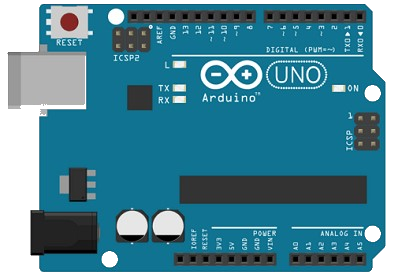

Mes loisirs
En dehors des cours, je m'adonne à la création de montages électroniques à l'aide de cartes Arduino ainsi qu'à la photographie, et occasionnellement au dessin.
Arduino
Ayant beaucoup apprécié de travailler sur Arduino au lycée, j'ai décidé d'acheter ma propre carte et mes propres composants afin de réaliser différents projets. Je prévois de réaliser une serrure contrôlable avec des badges RFID en m'inspirant de la vidéo de la chaîne YouTube ExperimentBoy, et à l'avenir un mini robot téléguidé.
Les possibilités de création sont très nombreuses, l'on retrouve en effet de nombreuses présentations de projets personnels sur internet à la fois créatifs et inspirants.
Photographie
 Depuis l'instant où j'ai eu pour la première fois un appareil photo dans la main, lorsque j'étais petit, j'ai toujours eu l'envie d'immortaliser certaines scènes du quotidien, pour pouvoir les partager et qu'elles ne restent pas simplement dans ma mémoire.
Depuis l'instant où j'ai eu pour la première fois un appareil photo dans la main, lorsque j'étais petit, j'ai toujours eu l'envie d'immortaliser certaines scènes du quotidien, pour pouvoir les partager et qu'elles ne restent pas simplement dans ma mémoire.
La progression des smartphones dans le domaine de l'image et de la vidéo me permet d'exercer cette petite passion sans devoir dépenser une lourde somme dans une caméra. Sur mon temps libre, je poste mes plus beaux clichés sur mon blog Instagram. Il s'agit principalement de photographies de monuments, fleurs, paysages, nourriture et animaux.
Dessin
 Depuis toujours, je n'ai jamais été bon en dessin. En 2019, j'ai pris la décision de prendre ma revanche sur ce passé et de me lancer dans cet art. Souhaitant intégrer un peu d'informatique à mes créations, j'ai acheté un Apple Pencil pour pouvoir dessiner sur iPad avec l'application Procreate.
Depuis toujours, je n'ai jamais été bon en dessin. En 2019, j'ai pris la décision de prendre ma revanche sur ce passé et de me lancer dans cet art. Souhaitant intégrer un peu d'informatique à mes créations, j'ai acheté un Apple Pencil pour pouvoir dessiner sur iPad avec l'application Procreate.
La chaîne YouTube de Gal Shir constitue une source d'inspiration pour moi, car cette personne utilise exactement les mêmes outils et la même application dans ses vidéos. Je m'entraîne donc à reproduire ses dessins pour m'améliorer, ce qui stimule également mon imagination.